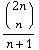

| Title: | How Many Nodes? |
| Source: | Spanish Site #10223 |
| Classification: | Arithmetic - Combinatorics |
| Problem Notes: |
Catalan Numbers occur frequently in combinatorial problems: The general form is:  The first few are: 1, 2, 5, 14, 42, 132, 429, 1430, 4862,... Other things they count are:
|
| Technical Notes: | The input output for the problem is straightfoward. |
| Solution: |
Method 1: Pre-enter the first 19 Catalan Numbers into an array and then match
Method 2: Dynamic Programming
Suppose we know the number of configurations of trees with n nodes - f(n) For a tree with n+1 nodes, we can place the new node at the root, and then deal with the left and right subtrees. The number of nodes we can have on the left subtree ranges from 0 to n, while the right subtree ranges from n to 0 accordingly. However, we already know the number of configurations for all these possibilities, so it is a simple summation of multiplications: f(n+1) = S(i=0 to n) f(i) × f(n-i). |
| Solution Code: | Gilbert Lee - Dynamic Programming Solution |